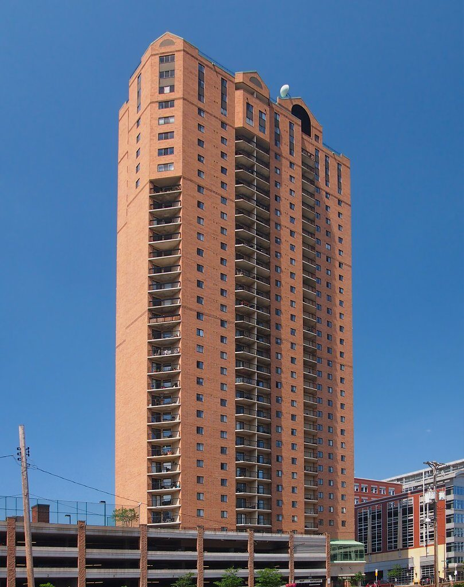

Panoramic Views from the 34th Floor in Downtown St. Paul
Perched on the 34th floor of The Pointe, the tallest residential building in Saint Paul, this two-bedroom corner penthouse delivers true panoramic views. To the north, the gold dome of the Minnesota State Capitol glows against the sky. To the west, the Minneapolis skyline rises above the tree line. To the south, the Mississippi River winds past downtown, with Pedro Park directly below.

Inside the 2-Bedroom, 2-Bath Penthouse
This 989-square-foot corner unit was designed to live as well as it looks. The open layout connects the living and dining areas, drawing natural light from two exposures throughout the day. Recent upgrades include new lighting, newer woodwork, and wood-look tile floors throughout. The kitchen is open and functional, and the in-unit washer and dryer means no trips to a shared laundry room.
- Two bedrooms and two bathrooms
- 989 square feet
- Corner unit with windows on two sides
- Upgraded lighting and newer woodwork throughout
- Wood-look tile floors throughout
- Open kitchen
- In-unit washer and dryer
- Separate storage locker included
- Two garage stalls included
- Updated bathroom with walk-in shower
Amenities at The Pointe of St. Paul
The Pointe offers resort-style amenities that are rare in downtown condos at this price point:
- Heated indoor pool, hot tub, and sauna
- Fully equipped fitness center
- Tennis court and basketball / pickleball sport court
- Rooftop sun deck and community grilling patio
- Party room with full kitchen
- Community room with fireplace and piano
- Media room and library
- Guest suite available for nightly rental
- 24-hour on-site security
- Secured package room and accessible mail area
- Free Wi-Fi in common areas
- Guest parking
Downtown St. Paul Location
The Pointe sits at the corner of Minnesota Street and 10th Street in downtown Saint Paul, directly across from Pedro Park and a Lunds & Byerlys grocery store. Within walking distance you'll find Xcel Energy Center, the Ordway Center for the Performing Arts, the Fitzgerald Theater, Rice Park, the Minnesota Children's Museum, the St. Paul Farmers Market in Lowertown, and restaurants along St. Peter Street.
The METRO Green Line 10th Street station is two blocks away with direct light rail service to Minneapolis. Interstates 94 and 35E are minutes away, and Minneapolis–St. Paul International Airport is about 15 minutes by car.
Frequently Asked Questions
What do the HOA fees cover at The Pointe of St. Paul?
- Utilities: heating, air conditioning, water, and sanitation/trash removal
- Maintenance: building exterior, lawn care, grounds maintenance, and snow removal
- Building operations: professional management, security staff, controlled access, and security systems
- Insurance: hazard and master building insurance
- Parking: designated parking space access
- Shared amenities: access to community recreation facilities and shared spaces
Is parking included?
Yes. Two garage stalls in the attached ramp are included, plus a separate storage locker.
Are pets allowed?
Yes. The association allows pets. Breed restrictions, weight limits, and registration requirements may apply under building rules, so confirm current details with the listing agent.
How far is it to Minneapolis?
The Green Line light rail runs directly to downtown Minneapolis from the 10th Street station two blocks away.
Schedule a Showing
To schedule a showing or request more information, contact the listing agent:
Mallory Garofalo, Keller Williams